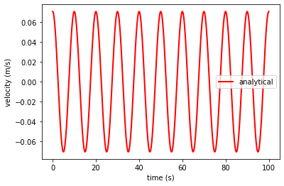
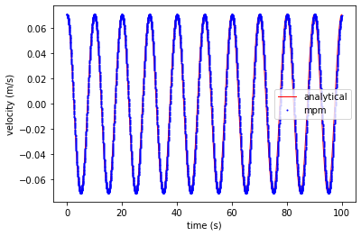
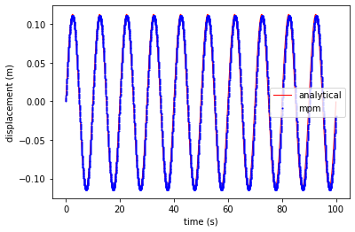
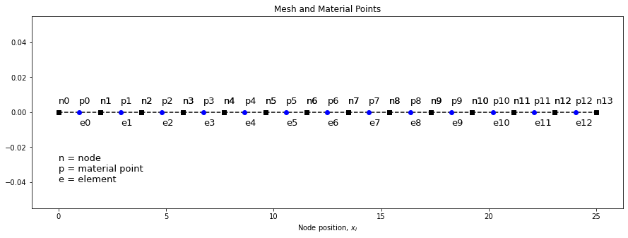
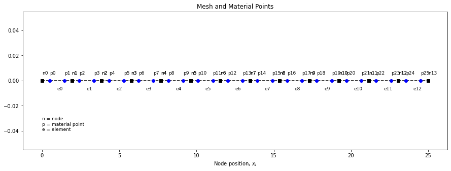
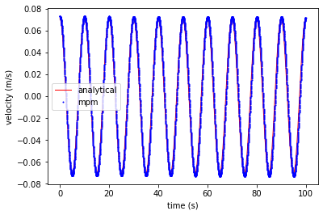
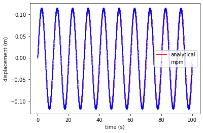

Axial vibration of a 1D bar (multiple material points)#


Schematic of uniform bar undergoing longitudinal motion
Analytical solution#
import numpy as np
def axial_vibration_bar1d(L, E, rho, duration, dt, v0, x):
# Frequency of system mode 1
w1 = np.pi / (2 * L) * np.sqrt(E/rho)
b1 = np.pi / (2 * L)
# position and velocity in time
tt, vt, xt = [], [], []
nsteps = int(duration/dt)
t = 0
for _ in range(nsteps):
vt.append(v0 * np.cos(w1 * t) * np.sin(b1 * x))
xt.append(v0 / w1 * np.sin(w1 * t) * np.sin(b1 * x))
tt.append(t)
t += dt
return tt, vt, xt
Let’s now plot the analytical solution of a vibrating bar at the end of the bar \(x = 1\)
import matplotlib.pyplot as plt
# Properties
E = 100
L = 25
# analytical solution at the end of the bar
ta, va, xa = axial_vibration_bar1d(L = L, E = E, rho = 1, duration = 100, dt = 0.01, v0 = 0.1, x = 12.5)
plt.plot(ta, va, 'r',linewidth=2,label='analytical')
plt.xlabel('time (s)')
plt.ylabel('velocity (m/s)')
plt.legend()
plt.show()

MPM implementation#
The grid consists of 13 two-noded line elements (14 grid nodes) and 13 material points placed at the center of the elements are used. We study the axial vibration of a continuum bar with Young’s modulus E = 100 and the bar length L = 25. The time increment is chosen as \(\Delta t = 0.1 \Delta x / c\) where \(\Delta x\) denotes the nodal spacing. The initial velocity is given by: \(v (x, 0) = v_0 \sin (\beta_1 x)\), where \(v_0 = 0.1\).

import numpy as np
import matplotlib.pyplot as plt
# mass tolerance
tol = 1e-12
# Domain
L = 25
# Material properties
E = 100
rho = 1
# Computational grid
nelements = 13 # number of elements
dx = L / nelements # element length
# Create equally spaced nodes
x_n = np.linspace(0, L, nelements+1)
nnodes = len(x_n)
# Set-up a 2D array of elements with node ids
elements = np.zeros((nelements, 2), dtype = int)
for nid in range(nelements):
elements[nid, :] = np.array([nid, nid+1])
# Loading conditions
v0 = 0.1 # initial velocity
c = np.sqrt(E/rho) # speed of sound
b1 = np.pi / (2 * L) # beta1
w1 = b1 * c # omega1
# Create material points at the center of each element
nparticles = nelements # number of particles
# Id of the particle in the central element
pmid = int(np.floor((nparticles/2)))
# Material point properties
x_p = np.zeros(nparticles) # positions
vol_p = np.ones(nparticles) * dx # volume
mass_p = vol_p * rho # mass
stress_p = np.zeros(nparticles) # stress
vel_p = np.zeros(nparticles) # velocity
vol0_p = vol_p # initial volume
for i in range(nelements):
# Create particle at the center
x_p[i] = 0.5 * (x_n[i] + x_n[i+1])
# set initial velocities
vel_p[i] = v0 * np.sin(b1 * x_p[i])
# Time steps and duration
duration = 100
dt_crit = dx / c
dt = 0.1 * dt_crit
t = 0
nsteps = int(duration / dt)
tt, vt, xt = [], [], []
for step in range(nsteps):
# reset nodal values
mass_n = np.zeros(nnodes) # mass
mom_n = np.zeros(nnodes) # momentum
fint_n = np.zeros(nnodes) # internal force
# iterate through each element
for id in range(nelements):
# get nodal ids
nid1, nid2 = elements[id]
# compute shape functions and derivatives
N1 = 1 - abs(x_p[id] - x_n[nid1]) / dx
N2 = 1 - abs(x_p[id] - x_n[nid2]) / dx
dN1 = -1/dx
dN2 = 1/dx
# map particle mass and momentum to nodes
mass_n[nid1] += N1 * mass_p[id]
mass_n[nid2] += N2 * mass_p[id]
mom_n[nid1] += N1 * mass_p[id] * vel_p[id]
mom_n[nid2] += N2 * mass_p[id] * vel_p[id]
# compute nodal internal force
fint_n[nid1] -= vol_p[id] * stress_p[id] * dN1
fint_n[nid2] -= vol_p[id] * stress_p[id] * dN2
# apply boundary conditions
mom_n[0] = 0 # Nodal velocity v = 0 in m * v at node 0.
fint_n[0] = 0 # Nodal force f = m * a, where a = 0 at node 0.
# update nodal momentum
for nid in range(nnodes):
mom_n[nid] += fint_n[nid] * dt
# update particle velocity position and stress
# iterate through each element
for id in range(nelements):
# get nodal ids
nid1, nid2 = elements[id]
# compute shape functions and derivatives
N1 = 1 - abs(x_p[id] - x_n[nid1]) / dx
N2 = 1 - abs(x_p[id] - x_n[nid2]) / dx
dN1 = -1/dx
dN2 = 1/dx
# compute particle velocity
if (mass_n[nid1]) > tol:
vel_p[id] += dt * N1 * fint_n[nid1] / mass_n[nid1]
if (mass_n[nid2]) > tol:
vel_p[id] += dt * N2 * fint_n[nid2] / mass_n[nid2]
# update particle position based on nodal momentum
x_p[id] += dt * (N1 * mom_n[nid1]/mass_n[nid1] + N2 * mom_n[nid2]/mass_n[nid2])
# nodal velocity
nv1 = mom_n[nid1]/mass_n[nid1]
nv2 = mom_n[nid2]/mass_n[nid2]
# Apply boundary condition
# Rendundant, since momentum and forces are already set to zero
# if (nid1 == 0): nv1 = 0
# rate of strain increment
grad_v = dN1 * nv1 + dN2 * nv2
# particle dstrain
dstrain = grad_v * dt
# particle volume
vol_p[id] *= (1 + dstrain)
# update stress using linear elastic model
stress_p[id] += E * dstrain
# update plot params
tt.append(t)
vt.append(vel_p[pmid])
xt.append(x_p[pmid])
t = t + dt
Plot results#
Velocity
plt.plot(ta, va, 'r', linewidth=1,label='analytical')
plt.plot(tt, vt, 'ob', markersize=1, label='mpm')
plt.xlabel('time (s)')
plt.ylabel('velocity (m/s)')
plt.legend()
plt.show()

plt.plot(ta, xa, 'r', linewidth=1,label='analytical')
plt.plot(tt, xt - xt[0], 'ob', markersize=1, label='mpm')
plt.xlabel('time (s)')
plt.ylabel('displacement (m)')
plt.legend()
plt.show()

Extending MPM to support multiple material points per element#
The code we have written is specific for a two-noded element with a single material point at the center of the element. The first step is to implement multiple material points in an element. Let’s start with particle generation:
# Material point properties
x_p = np.zeros(nparticles) # positions
vol_p = np.ones(nparticles) * dx # volume
mass_p = vol_p * rho # mass
stress_p = np.zeros(nparticles) # stress
vel_p = np.zeros(nparticles) # velocity
vol0_p = vol_p # initial volume
# Generate material points in cell
for i in range(nelements):
# Create particle at the center
x_p[i] = 0.5 * (x_n[i] + x_n[i+1])
# set initial velocities
vel_p[i] = v0 * np.sin(b1 * x_p[i])
We are placing the particles at the center of the element, so the volume and mass of a particle is the volume and mass of the element. Let’s create a new variable called ppc (particles per cell) to support multiple material points (particles) per cell.
# Material point properties
# Unchanged definitions
x_p = np.zeros(nparticles) # positions
stress_p = np.zeros(nparticles) # stress
vel_p = np.zeros(nparticles) # velocity
# New/updated variables
ppc = 1 # particles / cell
vol_p = np.ones(nparticles) * dx / ppc # volume
# these variables haven't changed, they are updated based on vol
mass_p = vol_p * rho # mass
vol0_p = vol_p # initial volume
Generating material points in a cell#
The current implementation generates a single material point per element.
x_p = np.zeros(nparticles) # positions
# Generate material points in cell
for i in range(nelements):
# Create particle at the center
x_p[i] = 0.5 * (x_n[i] + x_n[i+1])
# set initial velocities
vel_p[i] = v0 * np.sin(b1 * x_p[i])
Let’s plot the current mesh with a single material point per cell and see how it looks
# Function to plot mesh
import matplotlib.pyplot as plt
def plot_mesh(elements, x_n, x_p, fontsize=13):
# plt.cla()
fig = plt.gcf()
fig.set_size_inches(15, 5)
eid = 0
for element in elements:
n1, n2 = element
n1x, n2x = x_n[n1], x_n[n2]
plt.plot([n1x,n2x],[0,0],'--sk')
dy = 0.005
x=(n1x + n2x)/2
plt.annotate("e%d"%eid, xy=(x,-1.5*dy),fontsize=fontsize)
plt.annotate("n%d"%n1, xy=(n1x,dy),fontsize=fontsize)
plt.annotate("n%d"%n2, xy=(n2x,dy),fontsize=fontsize)
eid = eid + 1
pid = 0
for x in x_p:
plt.plot(x,0,'ob')
plt.annotate("p%d"%pid, xy=(x, dy),fontsize=fontsize)
pid = pid + 1
n1 = elements[0][0]
x = x_n[n1]
y = -0.04
plt.annotate("n = node\np = material point\ne = element", xy=(x,y),fontsize=fontsize)
plt.xlabel(r"Node position, $x_I$")
plt.title("Mesh and Material Points")
plt.show()
plot_mesh(elements, x_n, x_p)

Generating multiple material points per cell#
Let’s define a function that takes the number of particles per cell as an argument and return an array of positions.
def generate_particles(ppc, elements, x_n):
"""
Generate particles in mesh
Arguments:
ppc: int
number of particles per cell
elements: List
node ids of each element
x_n: List
nodal coordinates
Returns:
x_p: List
particle coordinates
el_pids: List
List of particle ids for each cell
"""
# ppc = number of particles per cell
# total number of particles
nparticles = nelements * ppc
# positions
x_p = np.zeros(nparticles)
# particle id
pid = 0
eid = 0
# Create a map of particle ids to each element
mpoints = []
# iterate through each element
for element in elements:
# get nodal ids
n1, n2 = element
# get nodal coordinates
n1x, n2x = x_n[n1], x_n[n2]
# element length
dx = abs(n2x - n1x)
# create an empty list of particles for each cell
particles = []
# generate particles uniformly across the element
for _ in range(ppc):
# first particle
if(len(particles)==0):
x_p[pid] = n1x + dx/(2 * ppc)
# last particle
elif(len(particles)==(ppc - 1)):
x_p[pid] = n2x - dx/(2 * ppc)
# mid particles
else:
x_p[pid] = n1x + dx/(2 * ppc) + len(particles) * (dx/ppc)
# Append to particles
particles.append(pid)
# particle id
pid += 1
# Add pids to each element
mpoints.append(particles)
# element id
eid += 1
return x_p, mpoints
1 PPC
Let us know generate a single material point per cell and plot to see if we get the same result.
x_p, _ = generate_particles(ppc=1, elements=elements, x_n=x_n)
plot_mesh(elements, x_n, x_p)
2 PPC
Let us know generate two material point per cell.
x_p, _ = generate_particles(ppc=2, elements=elements, x_n=x_n)
plot_mesh(elements, x_n, x_p, fontsize=9)

Iterate over particles#
Now that we have the ability to generate multiple material points per cell, we should also change how we loop over particle to map particle properties to node. Instead of mapping a single material property to the node, we need to map all particles’ properties in the element to the node.
# iterate through each element
for eid in range(nelements):
# get nodal ids
nid1, nid2 = elements[eid]
# compute shape functions and derivatives
N1 = 1 - abs(x_p[id] - x_n[nid1]) / dx
N2 = 1 - abs(x_p[id] - x_n[nid2]) / dx
dN1 = -1/dx
dN2 = 1/dx
# map particle mass and momentum to nodes
mass_n[nid1] += N1 * mass_p[id]
mass_n[nid2] += N2 * mass_p[id]
mom_n[nid1] += N1 * mass_p[id] * vel_p[id]
mom_n[nid2] += N2 * mass_p[id] * vel_p[id]
# compute nodal internal force
fint_n[nid1] -= vol_p[id] * stress_p[id] * dN1
fint_n[nid2] -= vol_p[id] * stress_p[id] * dN2
We need the associated particle ids for each element. We have the variable mpoints returned by generate_particles() function. The variable mpoints maps the particle ids to each element. Now we can iterate through all the particles in each element, instead of one particle per element.
# iterate through each element
for eid in range(nelements):
# get nodal ids
nid1, nid2 = elements[eid]
# get particle ids associated with the element
mpts = mpoints[eid]
# iterate through all particles in the element
for pid in mpts:
# compute shape functions and derivatives
N1 = 1 - abs(x_p[pid] - x_n[nid1]) / dx
N2 = 1 - abs(x_p[pid] - x_n[nid2]) / dx
dN1 = -1/dx
dN2 = 1/dx
# map particle mass and momentum to nodes
mass_n[nid1] += N1 * mass_p[pid]
mass_n[nid2] += N2 * mass_p[pid]
mom_n[nid1] += N1 * mass_p[pid] * vel_p[pid]
mom_n[nid2] += N2 * mass_p[pid] * vel_p[pid]
# compute nodal internal force
fint_n[nid1] -= vol_p[pid] * stress_p[pid] * dN1
fint_n[nid2] -= vol_p[pid] * stress_p[pid] * dN2
Similarly, we will modify the mapping from node to particles.
Multiple material points per cell#
Full implementation to support multiple material points per cell. The following example shows how to perform the axial vibration in a 1D bar with 2 particles per cell.
import numpy as np
import matplotlib.pyplot as plt
# particles per cell
ppc = 2
# mass tolerance
tol = 1e-12
# Domain
L = 25
# Material properties
E = 100
rho = 1
# Computational grid
nelements = 13 # number of elements
dx = L / nelements # element length
# Create equally spaced nodes
x_n = np.linspace(0, L, nelements+1)
nnodes = len(x_n)
# Set-up a 2D array of elements with node ids
elements = np.zeros((nelements, 2), dtype = int)
for nid in range(nelements):
elements[nid, :] = np.array([nid, nid+1])
# Loading conditions
v0 = 0.1 # initial velocity
c = np.sqrt(E/rho) # speed of sound
b1 = np.pi / (2 * L) # beta1
w1 = b1 * c # omega1
# Create material points
nparticles = nelements * ppc # number of particles
# Id of the particle in the central element
pmid = int(np.floor((nparticles/2)))
# Material point properties
x_p = np.zeros(nparticles) # positions
vol_p = np.ones(nparticles)*dx/ppc # volume
mass_p = vol_p * rho # mass
stress_p = np.zeros(nparticles) # stress
vel_p = np.zeros(nparticles) # velocity
vol0_p = vol_p # initial volume
defg_p = np.ones(nparticles)
# Generate particles
x_p, mpoints = generate_particles(ppc, elements, x_n)
for i in range(nparticles):
# set initial velocities
vel_p[i] = v0 * np.sin(b1 * x_p[i])
# Time steps and duration
duration = 100
dt_crit = dx / c
dt = 0.1 * dt_crit
t = 0
nsteps = int(duration / dt)
tt, vt, xt = [], [], []
for step in range(nsteps):
# reset nodal values
mass_n = np.zeros(nnodes) # mass
mom_n = np.zeros(nnodes) # momentum
fint_n = np.zeros(nnodes) # internal force
# iterate through each element
for eid in range(nelements):
# get nodal ids
nid1, nid2 = elements[eid]
# get particle ids associated with the element
mpts = mpoints[eid]
# iterate through all particles in the element
for pid in mpts:
# compute shape functions and derivatives
N1 = 1 - abs(x_p[pid] - x_n[nid1]) / dx
N2 = 1 - abs(x_p[pid] - x_n[nid2]) / dx
dN1 = -1/dx
dN2 = 1/dx
# map particle mass and momentum to nodes
mass_n[nid1] += N1 * mass_p[pid]
mass_n[nid2] += N2 * mass_p[pid]
mom_n[nid1] += N1 * mass_p[pid] * vel_p[pid]
mom_n[nid2] += N2 * mass_p[pid] * vel_p[pid]
# compute nodal internal force
fint_n[nid1] -= vol_p[pid] * stress_p[pid] * dN1
fint_n[nid2] -= vol_p[pid] * stress_p[pid] * dN2
# apply boundary conditions
mom_n[0] = 0 # Nodal velocity v = 0 in m * v at node 0.
fint_n[0] = 0 # Nodal force f = m * a, where a = 0 at node 0.
# update nodal momentum
for nid in range(nnodes):
mom_n[nid] += fint_n[nid] * dt
# update particle velocity position and stress
# iterate through each element
for eid in range(nelements):
# get nodal ids
nid1, nid2 = elements[eid]
# get particle ids associated with the element
mpts = mpoints[eid]
# iterate through all particles in the element
for pid in mpts:
# compute shape functions and derivatives
N1 = 1 - abs(x_p[pid] - x_n[nid1]) / dx
N2 = 1 - abs(x_p[pid] - x_n[nid2]) / dx
dN1 = -1/dx
dN2 = 1/dx
# compute particle velocity
if (mass_n[nid1]) > tol:
vel_p[pid] += dt * N1 * fint_n[nid1] / mass_n[nid1]
if (mass_n[nid2]) > tol:
vel_p[pid] += dt * N2 * fint_n[nid2] / mass_n[nid2]
# update particle position based on nodal momentum
x_p[pid] += dt * (N1 * mom_n[nid1]/mass_n[nid1] + N2 * mom_n[nid2]/mass_n[nid2])
# nodal velocity
nv1 = mom_n[nid1]/mass_n[nid1]
nv2 = mom_n[nid2]/mass_n[nid2]
# Apply boundary condition
# Rendundant, since momentum and forces are already set to zero
# if (nid1 == 0): nv1 = 0
# rate of strain increment
grad_v = dN1 * nv1 + dN2 * nv2
# particle dstrain
dstrain = grad_v * dt
# particle volume
vol_p[pid] *= (1 + dstrain)
# update stress using linear elastic model
stress_p[pid] += E * dstrain
# update plot params
tt.append(t)
vt.append(vel_p[pmid])
xt.append(x_p[pmid])
t = t + dt
Plot velocity at the center of the bar
plt.plot(ta, va, 'r', linewidth=1,label='analytical')
plt.plot(tt, vt, 'ob', markersize=1, label='mpm')
plt.xlabel('time (s)')
plt.ylabel('velocity (m/s)')
plt.legend()
plt.show()

Plot displacement at the center of the bar
plt.plot(ta, xa, 'r', linewidth=1,label='analytical')
plt.plot(tt, xt-xt[0], 'ob', markersize=1, label='mpm')
plt.xlabel('time (s)')
plt.ylabel('displacement (m)')
plt.legend()
plt.show()
